WindowsMobileでGPS地図を使う : 地図の作成
Home > Software > ソフトウエア開発・サーバ管理のメモ帳 > このページ
Last Update 2010/01/25
| デバイスの基本設定 デスクトップの設定 ネットワークの設定 GPSの設定 SiRF GPSモジュールの設定 地図の作成 |
GarmapCEで表示する地図データを作る方法の説明です。GPSレシーバを用いることで、現在地を表示することができます。
USGSやNASAが公開している標高データ、国土地理院の1/25000地図のほか任意の地図画像（座標のキャリブレーションが可能なもの）から、地図データを作成します。
地図データの作成の概略
■ NASAの標高データを用いる場合
■ 国土地理院1/25000地図データを用いる場合
- カシミール3Dで国土地理院のサイトからデータダウンロード
- カシミール3Dで読み込んで、マップカッターで切り出す
■ インターネット地図サイトの画像を用いる場合
このページで使用しているソフトウエアの入手先リンク集
- カシミール3D ： 地図ソフト
- カシミール3D用 マップカッター・プラグイン（標準でインストール済み）
- カシミール3D用 スペースシャトル地図プラグイン ： SRTMデータを使うときに必要です
- Map Grabber / (MSDN Code Gallery) ： 地図サイトより自動切り出し
- Gimp for Windows ： 画像処理ソフト
GTOPO30地図
USGS (United States Geological Survey アメリカ合衆国地質調査所) が公開している高度データから地図を作成する方法の説明。GTOPO30 とは、地球表面を立体角30秒（約1kmメッシュ）の解像度を持つ高度データです。
■ データのダウンロード
地図データのダウンロードは、USGSのサイトまたは日本のミラーサイトから行います。
複数の地区の地図をダウンロードした場合でも、それらを一つのフォルダに格納すれば1枚の地図として扱えます。ダウンロードしたデータのうち、*.SRC というデータは使わないので削除してもOKです。
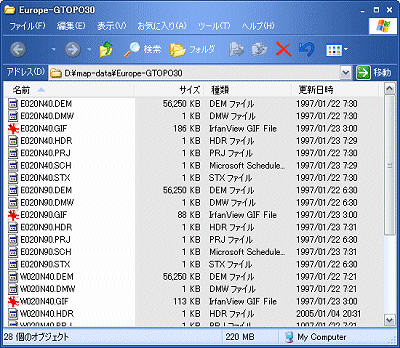
ダウンロードしたファイルを解凍して、フォルダに入れた状態
■ カシミール3Dで読み込む
カシミール3Dの 「ファイル － 開く － 形式を指定した地図 ... － USGS30秒/GTOPO30 ...」 メニューで、地図データを開くだけです。複数の地域の地図データが入っているフォルダの場合、どれか一つのファイルを開くだけで自動的に全てのファイルが連結されて地図として認識されるようです。
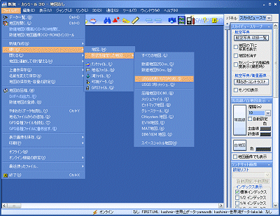
■ 座標の調整
データはWGS84測地系の座標値を持っているため、調整の必要は無いようです。
■ 表示色の調整
「表示 － 表示の設定」メニューのダイアログで、「地形表現」タブで等高線の描き方を設定できます。
「表示 － パレットの選択」メニューで色パレットの使い方を指定できます。
地図表現 ： 段彩図 無段階、パレット：衛星写真の色分けとすると違和感の無い表示になるはずです。
SRTM地図
NASAが公開しているスペースシャトルによるレーダー計測データです。立体角30秒、3秒、1秒（最大解像度は約30m）に対応するデータが存在しますが、どのデータも地球の全表面を網羅しているわけではないようです。
■ データのダウンロード
NASAのSRTMホームページに、FTPサーバへのリンクが作られています。計測地区（四角形）の左下の座標値をファイル名にしています。（説明書：Quickstart.pdf）
例 ： N46E007.hgt.zip → 北緯46°東経7°
■ カシミール3Dで読み込む
カシミール3Dの 「ファイル － 開く － 形式を指定した地図 ... － スペースシャトル地図」メニューで、地図データを開くだけです。複数の地域の地図データが入っているフォルダの場合、どれか一つのファイルを開くだけで自動的に全てのファイルが連結されて地図として認識されるようです。
■ 座標の調整
データはWGS84測地系の座標値を持っているため、調整の必要は無いようです。
地図サイトの地図画像を流用
WGS84測地系にマッピングできる地図画像なら、どんな画像でも使えるはずです。
■ データのダウンロード
インターネットの地図サイトや地図帳なら何でもOKです。画面をキャプチャ（スキャン）して画像編集ソフトでつなぎ合わせるだけです。
ただし、「地球の歩き方」や「Lonely Planet」の本に掲載されている地図は、座標がムチャクチャですので使えません。（使えたら便利なんですけどね...）
なお、地図の選択と利用は自己責任で行ってください。
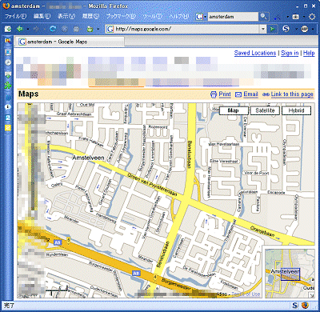
地図サイトのホームページで地図を表示する。
Map Grabberで自動切り出しを行うか、手動で画面キャプチャして（Gimpなどの）画像ソフトで切り貼りして地図画像を作成する。
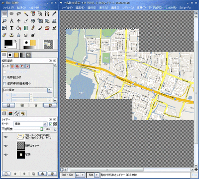
Gimpを利用して、画面キャプチャと画像の張り合わせを行う。張り合わせた画像は（出来れば256色に減色して） BMP形式のビットマップ画像として保存する。
■ カシミール3Dで読み込む
カシミール3Dの 「ファイル － 開く － 形式を指定した地図 ... － ビットマップ地図... 」メニューで、ビットマップ画像を開きます。
「緯度経度情報の指定」ダイアログが出てきますが、ここでは何も設定しません。何も考えずに「作成」ボタンを押すと、カシミール3Dに地図画像が読み込まれます。
地図画像中の任意の場所（市街地図なら街路の交差点、広域の地図なら幹線道路の交差点など）の座標（WGS84測地系）を調べます。出来れば画像の対角付近の2点と中央付近の1点の3点を調べます。
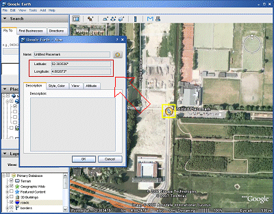
Google Earthで調べたい箇所にプレースマークを置いたときに出るダイアログボックスや、画面の下端あたりに座標（緯度・経度）が表示されます。
カシミール3Dの 「編集 － 地図のキャリブレーション ... 」 メニューを開きます。
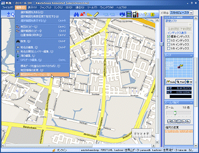
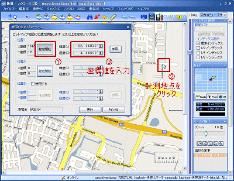
① 指定開始ボタンを押す。
② 地図上の計測地点をクリックする。（X座標、Y座標にビットマップ上での位置が入力される）
③ （Google Earth などで調べた） WGS84測地系の座標値（緯度・経度）を入力する
④ 指定開始ボタンを再度押して、編集モードを抜ける。
上記作業を地図上の3地点で行います。
GarmapCE用に地図を切り出す
引き続き、カシミール3Dを使います。
広い範囲を選択する場合は、あらかじめズームレベルを下げて広い範囲を選択しておきます。
「編集 － 選択範囲を決める」メニューをクリックします。
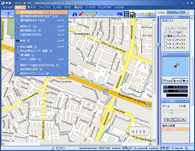
マウスで範囲を選択すると、赤斜線の四角形が表示されます。
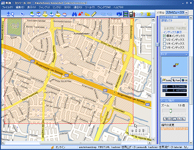
切り出す画像の解像度に戻します。範囲選択はWGS８４座標系で行っているため、選択範囲を含む地図であれば差し替えることも出来ます。
「ツール － マップカッター － 切り出し」 をクリックします。
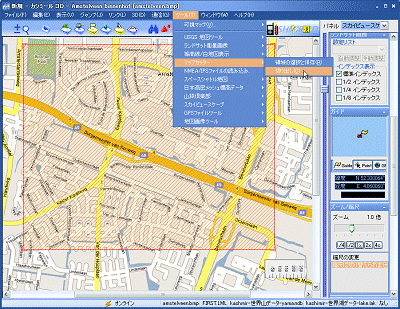
出力形式：GarmapCE形式、分割数：画面サイズ（240 × 320）を指定します。
ファイル形式はどれでもかまわないようです。通常はPNGが圧縮が掛かりファイルの大きさが小さくなるようです。
カラーは8ビット／ピクセルを選択します。16ビット／ピクセルを選ぶとファイルサイズが大きくなると共に、GarmapCEの動作が遅くなることがあるようです。
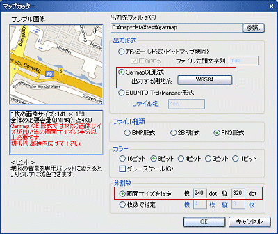
書き出されたファイルは、次のようになります。一つのフォルダに一つの地図しか格納できません。
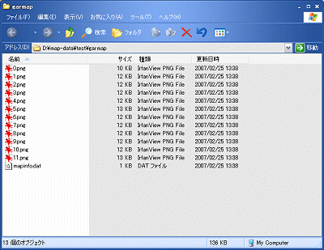